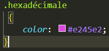
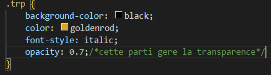

Je suis un grand voyageur
Bla bla bla bla (texte de l'article)
CSS (Cascading Style Sheets), sont role est de gerre la mise en forme de notre site web
dans cette partiqe ont utilise la balise orpheline (link) dans la page html et on ouvre un autre dossier a coter

en css pour colorer les parties d''un paragraphe ont utilise le code CSS sue l'image en desous

il exite plusieur code ajoutr a c ette maniere pour un code en CSS comme un ex:h1 et aussi (*)et bien d'autre

pour appliquer un style a plusieu nom de balise mais une valeur nous
pouvont fais appel a une serie de nos de balise avace chancun la meme valeur cela ne genre pas ex ci dessous

on peut aussi aligner les nom des balise ayant la meme propriete de valeur enles eparant d'une virgule

pour utuliser un css dans une page CSS on utilise le code suivant (/*commantaire*/)
l'atribur (class et id) sont utiliser pour specifier baucoup de chose mais dans ce care il seront utiliser pour
preciser l'androit exacte ou doit agire notre css

l'atribut (class): on ajoute dans le programme CSS la valeur de l'atribut (class) precede d'un point
ex avec id 
avc (id) lorsque vous définirez leurs propriétés dans le fichier CSS, il faudra faire précéder le nom de l'id par un dièse (#)
il y a comme balise universelle (le span) et le (div)
pour changer la forme d'un texte on faire tout fois appel a des (selecteur)


(*) est un selecteru universelle. il selection tout les balise sans en meme temps

il selection les balise a l'interieur d'une autre balise


cela signifie que je veux modifier la balise qui suit la precedente


elle selection tout balise ayant la meme attribut .
comme par example les liens qui suit
une simple infos
le lien de la page 2.
ont constatera que les balises (a) contenant l'attribut (title) beneficiront du meme changement


elle selection tout balise ayant la meme attribut et aussi la meme valeur comme par le lien qui suit
une simple infos
un bon lien
une simple infos
ont constate que seul les balises (a) contenant l'attribut (title) avec les meme (valeur) change


en effet cette methode n'est pas diferente de celle passe.cette fois l'attribur contion une valeur excate defini
sur plusieur theme
comme l'image ci desous
un bon lien
un bon lien
une simple infos


pour modifier la taille du texte ont utilise la propriéte css (font-size)
la taille absolue est indiquer en pixel (px) , en centimetre (cm) ou en millimetre (mm) mais cette methode est utile en car de nesseciter obsolue
pour indiquer une taille absolue ont utilise generalement le pixel


pour indiquer une taille relative ont utilise le pourcentage; (em) ou (ex) elle a l'avantage d'etre plus
souples
et plus conseiller
nous avont sept taille donner par le pourcentage qui sont:

il existe aussi deux autre techenique avec aussi (em et ex)

il y a un probleme a ce niveuax pourque une police s'affiche il faut que tout les internautes aient la meme
police
que vous dans le
car contraire d'ordinateur prendra une police par defaut et aussi pour se fait ont
utilise la
propriete font-family
avec (css) nous pouvons aussi telecharger les polices
comme l'exemple qui suit dans l'image suivante

un example avec une police
un autre example de police
encore un example de police qui est

pour ce fait ont telecharge aussi plusieur police pour etre plus sur ont les introduit dans le code ensemblle
en
les separent d'une virgule comme l'image qui suit

en general dans le code css apres avoir donne tout les police telechanger ont introduit
la police (serif) ou (sans-serif) qui est unne police par defaut
les police les plus utiliqer pour les navigateur sont les suivante

ci le nom de la police comprends un espace il doit etre entourer avec un gillemet ("courier new")

en retirn en se moment que (em) ne signifie pas qur le texte est en gras mait plutot qu'il est tres important
pour metre en italique ont utulise font-style qui eput prendre trois valeurs
qui sont :


pour metre en gras le code css est (font-weigt) ce n'est pas la balis (strong car elle signifie a lordinateur que le texte est important pour metre en gras nous avont les code suivant:

et aussi avec normal et le texte s'ecrire normalement pas defaut
pour ce fait ont utulise le code css text-decoration elle permet de souliger le texte et autre comme suite


avec le languange css il est possible d'aligner les texte à gauche, centré, à droite et justifié avec le code css text-align


retenon que ont ne peut que modifier les paragraphe de balise de type bloc div,h1,p
le css nous permet de fait flotter un ellement au tour du texte ont dit aussi que on fait un habillage
et pour ce faire nous allons utiliser la propriete que voici float et elle seras
accompager
de deux valeur qui sont left et right
et il fonctione sur la balise blok comme pas blok
 un exemple comme l'indique l,imaque qui est actuellement
un exemple comme l'indique l,imaque qui est actuellement
alors je ne me debrouille pas maal a se que je voir
il ne faux jamais ecrit les paragraphe avant l'image
en effet apres pour ce car le texte se porssuit a la ligne apres la propriete flotte (float:left ou
right;)
au cas ou je veux continué a la ligne en dessous de mon image flotant et ont utilise la proprieté (clear) qui admet une valeur (both) comme l'exemple qui suit

cette exemple ilustre tout ce que je veux savoire en se moment sur ma page
et cette page est ma âge amoi et je vais bien bosser sans relache dans la vie
pour revenir a la ligne ont utilise la propriete (clear) qui a une valeur (boht)
il sagit d'utiiser a propriete css color suivi du nom de la couleur en anglais
cela on utiise la propriete color suivit de (#) et de 6 lettre de A-F et de 1-9
RGB qui signifie Rouge-Vert-Bleu est aussi iune methode de couleur il suffi de suivre es couleur dans papier
pain
dans orsdinateur pour de recupe es chffre a troix ranger
ele consiste a donne la c.ouleur de fond a a page ou a une texte et pour cela on utiisz la propriete

pour utiliser une image de fond ont utiise la proprieté background-image suivi de url puis e nomde l'image

background-image peut etre compete par plusieur autre proprieté qui permet de de changer le comportement de l'image de fond
cettre propriete permet de fixé le fond et permete autexte de ciser sur 'imaage
 fixed :l'image de fond reste fixe ;
fixed :l'image de fond reste fixe ;
scroll : l'image de fond défile avec le texte (par défaut).
avec la propriete background-repeat nous somme capable de manipue les fond avce :
 no-repeat : le fond ne sera pas répété. L'image sera donc unique sur la page
no-repeat : le fond ne sera pas répété. L'image sera donc unique sur la page
repeat-x : le fond sera répété uniquement sur la première ligne, horizontalement
repeat-y : : le fond sera répété uniquement sur la première colonne, verticalement
repeat : le fond sera répété en mosaïque (par défaut).
background-position cette proprieté permet de positionné les image de fond dans notr page
elle est plus efficace quand elleest utiiser avec background-repeat olesty aussi possible de
donnée
la position en pixel
background-position: 30px 50px; placé à 30 pixels de la gauche et à 50 pixels du haut
il y as ausi les vaeur comme:
top : en haut ;
bottom : en bas ;
left : à gauche ;
center : centré ;
right : à droite.

cette proprieté permet de geré la transparance danas a forme du texte
apres sa declaration ont lui atribut des valeur
la valeur (0) rendra la page blanche tandisque la valeur (1) rendra la page visible

pour modifié l'apparence des bordures des bordure dans notre page nous aors utiliser la proprieté
border
avce cettre propriete nous allons combiné plusieur valeur dabord:
la largeur : en pixel ou en (em)
la couleur : nous dornon la couleur de la bordure
le style : enfin le donnons le style de la bordure
comme style nous avons :
avec cette meme proprieté nous pouvons deterùiner ou nous vouaus que notre bordures soitent pour cea nous
utiison
(border-) acompagné des proprieté qui sont(top :en haut ; left :gauche ; right :droit ;
bottom :en bas ;
a propriete pour es bordure arondi sont (border-radius) et qui ont des vaeur en pixel
(px).
elle peut aussi avoir uantre vaeur qui represente chaque coté (px:haut-gauche; px:haut-droit ;
px:bas-droit; px:bas-gauche )
l'aarrondi est utilisable avec proprieté de bordure ou des couleur
ou image de fond
nous avons deux types d'ombres :
la propriete box-shadow et text-shadow contien (4) valeur dont les trois premiere valeur sont
en
pixel elle
sont:

nous verons ici comment changer l'apparence
ici on utilise la foction (balise:hover) qui permet de changer l'aparence lorsque la souri
survole
le contenue de la balise. comme exemple nous avons le line qui suit:
lien openclassrooms

ici on utilise la fonction (balise:active) pour changer l'aparence du lien apres le clic
lien openclassrooms

ici on utilise la fonction (balise:focus) pour changer changer l'aparence definitivement apres
visite
lien openclassrooms

ici on utilise la fonction (balise:visited) pour changer changer l'aparence dulien une foisqu'il
a
ete visité
lien openclassrooms

En général, une page web est constituée d'un en-tête (tout en haut), de menus de navigation (en haut ou sur les
côtés),
de différentes sections au centre… et d'un pied de page (tout en bas).
la plupart des cite posede un en-tête appelle header c'est une balise paire
qui contien souvent un logo, une bannière, le slogan de votre site…
Il peut y avoir plusieurs en-têtes dans votre page. Si celle-ci est découpée en plusieurs sections,
chaque section peut en effet avoir son propre header
elle permet de regroupé tout les principeaux lien de navigation du cite
Généralement, le menu est réalisé sous forme de liste à puces à l'intérieur de la balise (nav)

La balise section sert à regrouper des contenus en fonction de leur thématique.
Elle englobe généralement une portion du contenu au centre de la page. le resultat doenne l'image suiant :

sur une page peu avoir plusieur section et chaque section peuvent avoire leur titre (h1) etc.. ainsi que leuren-tete
elle sont utiliser pour aporter des information complémentaires au documment
ces informatioon sont generalement placé sur le cotédans la balise de la section
la partie article sert a englobé une magere patie des information de la page, a presenté
l'atout
principale de la page
le pied de page se trouve en général tout en bas du document. On y trouve des informations comme :

en html il y as deux types de balise :
elle s'applique ici que pour les balises de types block. un block posed une longuer et une largeur :

min-width : largeur minimale ;min-height : hauteur minimale ;max-width : largeur maximale ;max-height : hauteur maximale.
il existe deux sortes dde mage qui sont:
Romen est un mencey (ou roi guanche) des îles Canaries du Menceyato de Daute à Tenerife. À l'arrivée d'Alonso Fernández de Lugo en 1494, Romen s'allia avec le mencey Bencomo contre l'invasion espagnole. Après la défaite, Romen livra son territoire au printemps 1496 dans la loi connue sous le nom de Paz de Los Realejos. Romen fut emmené en Espagne pour y être présenté aux Rois Catholiques1. La date et le lieu de sa mort étant inconnus, il pourrait avoir été emmené en esclave et transféré en République de Venise. D'autres auteurs considèrent que, malgré son appartenance à la faction de la guerre, il a peut-être été libéré sous surveillance, mais en dehors de l'île de Tenerife.
Romen est un mencey (ou roi guanche) des îles Canaries du Menceyato de Daute à Tenerife. À l'arrivée d'Alonso Fernández de Lugo en 1494, Romen s'allia avec le mencey Bencomo contre l'invasion espagnole. Après la défaite, Romen livra son territoire au printemps 1496 dans la loi connue sous le nom de Paz de Los Realejos. Romen fut emmené en Espagne pour y être présenté aux Rois Catholiques1. La date et le lieu de sa mort étant inconnus, il pourrait avoir été emmené en esclave et transféré en République de Venise. D'autres auteurs considèrent que, malgré son appartenance à la faction de la guerre, il a peut-être été libéré sous surveillance, mais en dehors de l'île de Tenerife.
il est possible de especifié ou nous voulons quelamarge soit avec les direction qui sont
left; right; top; bottom precede de
padding :marge interieur; et de margin : marge
exterieur
pour centre un bloc cest ilsuffi d'indentifé la dimention avec width puis mettre la valeur
de lamarge exterieur margin sur auto au cas ou nous avons
plusieur bloc, les peraré avec margin-botton ou margin-top

il se peut que souvent des texte depace les dimention que nous voulons , alors comment y remedié
Romen est un mencey (ou roi guanche) des îles Canaries du Menceyato de Daute à Tenerife. À l'arrivée d'Alonso Fernández de Lugo en 1494, Romen s'allia avec le mencey Bencomo contre l'invasion espagnole. Après la défaite, Romen livra son territoire au printemps 1496 dans la loi connue sous le nom de Paz de Los Realejos. Romen fut emmené en Espagne pour y être présenté aux Rois Catholiques1. La date et le lieu de sa mort étant inconnus, il pourrait avoir été emmené en esclave et transféré en République de Venise. D'autres auteurs considèrent que, malgré son appartenance à la faction de la guerre, il a peut-être été libéré sous surveillance, mais en dehors de l'île de Tenerife.

la propriete pour coupé une bloque est overflow et elle contion trois valeur:
il se trouve que souvant nousavons affaire a des texte trop long comme des lien
ey nousvoulonles dans un cadre ci il ne rendrepas la proprier a etuliser est word-wrap
avec
comme
valeur break-word
le principe de flexbox est tres simple il sufit de ranger dans un conteneur des elements
exemple: une carton dans le quel nous rangeon des objets.
le carton represente conteneur et
les objets represente les element . une page web peut
en
contenir plusieur
l'attribut display qui apour valeur flex permet d'aligner les element sur la meme ligne alors les element se place a coté côte a côte par defaud

aussi flexbox nous permet de placé les element dnas la position que nous voulon avec l'attribut flex-direction et les valeur du positionement sont :

pour le retoure a la ligne nous utilison la propriete flex-wrap
qui permet un retoure a la linge en manque de place les valeur sont

les element sont aligner sur l'axe horizontale ou sur l'axe verticale , cela defini l'axe principale
les elements peuvent s'aligne de diferente maniere soite horizontalement ou soit verticalement avec la proprite justify-content et les valeurs de cete proproete sont:

si nos element sont deplacer dans une directeur horizontal l'axe secondaire est verticale et
si elle est deplace deplace dans dans une direction veertical l'axe secondaire est horizontal
pour l'utiliser ont precise d'abord la proprieter et la valeur de l'axe principal justify-content
avec la propriete align-items nous pouvons changer la propriete de l'axe secondaire avec les valeurs qui sont

pour alligner un seul element j'utilise la proprieté align-seft suivit des meme valeur que le precedant
en cas de plusieur element nous pouvons choisir comment reparti avec align-content et les
valeur sont les meme
que les precedent
changer l'odre des element avec le code css dans le lien qui suis Rappel à l'ordre
avec la propriete flex nous pouvons permetre a un element de grosir ou maifrire pour occupé tout l'espace
aussi les caractere nth-child (numero de l'element) permet de ciblé l'elemnt
les autre technique de positionnement avant flexbox
UN EXPLEMPLE (1) POUR MIEUR COMPRENDRE
Bla bla bla bla (texte de l'article)
inline-block est une valeur qui a pour propriete display
permet au element de se positionnet lun a cote de l'autre
apres il vas faloire choisir ou nous voulon positioné nos element avec la proprieté vertical-align les valeur de cette propriete sont les suivante:
UN EXPLEMPLE (2) POUR MIEUR COMPRENDRE
Bla bla bla bla (texte de l'article)

il exsite d'autre technique pour le positionement avec precision
il faut faire d'abord un choix entre cest 3 valeur de positionement avec la propriete position et indique les valeur qui suit :
il es posible de superposer les element dans se cas on utilise la proprieté
z-index
et qui as pour valeur les nombres ; le nombre leplus element est au desut des autre
Le
positionnement fixe
il permet de posotionexe e de fixe de sorte a seque lelement ne bouge pas mais que la page bouge
methode
identique que le precedenet
UN EXPLEMPLE (3) POUR MIEUR COMPRENDRE
Bla bla bla bla (texte de l'article)
la premiere balise pour un tableaux est la balise paire de bloc (table) elle se fond dans la parti html apres nous allons ajouter le titre du tableau et les bordurs dans le css
| nom | age | ville |
|---|---|---|
| max | 30 ans | divo |
| kevyn | 11 ans | boudoukou |


pour se fait il faut tout dabord defini les bordure des td ensuite de la
table .
pour les td nous alons utiliser la propriete border et cest attribue pour le cadre
complet
nous ferons appelle a la balise table avec comme proprite
border-collapse et
comme valeur collapse.
avant tout il vas falloir definir la legendre a l'aide de la balise th inclut dans
la balise
tr et ayant la meme propriete css que la balise td
il arrive dans les cas ou nous avons besoin des tableaux plus complexe
ces tablaux come sructure
un tableau tres grand est diviser en trois parties en fonction du travaille
| nom | pays | ville |
|---|---|---|
| Carmen | 33 ans | Espagne |
| Michelle | 26 ans | États-Unis |
| François | 43 ans | France |
| Martine | 34 ans | France |
| Jonathan | 13 ans | Australie |
| Xu | 19 ans | Chine |
| nom | pays | ville |
il existe des tablaux ou nous serons obliger de fusinné les tablaux
retenons que pour effectuer une fision ont rajoute une valaur a la balise (td)
il existe deux types de fusion qui sont

| Titre du film | Pour enfants ? | Pour adolescents ? |
|---|---|---|
| Massacre à la tronçonneuse | oui | |
| Les bisounours font du ski | Oui, adapté | Pour toute la famille ! |
| Lucky Luke, seul contre tous | Pour toute la famille ! | |
un formulaire est rediger dans une balise paire ( form ) elle est la balise princial
dans la
creation d'un formulaire
note qu'il faut metre dns un formulaire obligatoirement des balise de type bloc
dans la creation d'un formulaire nous somme confronté a repondre a deux probleme qui sont :
pour resoudre ces probleme nous allons ajouté a la balise form deux attibuts qui sont:

il exsitse deux types de zones de textes different
pour inseret une zonne de texte nt utilise la balise orpheline input qui as un attibut type avec des valeur diferente aussi ont lui donne un nom qui vas etre utile dans le programme php pour une reconnaicance

exemplaire de formulaire
le libelé c'est pour permetre au visiteur dez savoir quoi ecrire dans notre champ vide
pour se faire ont utilise la balise paire label
apres il vas faloir liée le label avec le formulair avec l'attribut for pour le
label et
id pour le formulaire input,
il aurron comme valeur la valeur de l'attribut
name duformulaire
le resultat de sa est que qaund ont clik sur le label le curseur mainne directement au formulaire

exemplaire de formulaire
input peut contenir d'autre attibu pour perfectionnen sont fonctionnement

exemplaire de formulaire
le mot de pase consiste a masquer les zonne d'ecriture pour se faire nous allons changés la valeur du types en password

exemplaire de formulaire
pour la zone de texte mulriligne ont change la balise orpheline input par la
balise paire
textarea il ne contien pas de type
il est possible de modifier les dimenssion
de textarea
de deux maniere

exemplaire de formulaire
il y as plusieur valeur a accorder au type en fonctionc du formulaire que l'on veux consevoire
pour le E-mail on change le type de la balise input avec le nom E-mail
avec se cette valeur nous demandons a l'utilisateur de saisir forcement un mail

exemplaire de formulaire
avec le type a valeur url ont demande a l'utilisateur de saisir absolument une address commençant generalemet par http:/

exemplaire de formulaire
avec le type a valeur tel ont demande a l'utilisateur de saisir absolument un umero de telephone

exemplaire de formulaire
ce champ peermet a l'utilisateur de saisir des nombres avec la pour type
number
nous pouvons aussi personnaliser le camps avec l'attribut suivant :

exemplaire de formulaire
la type range permet de selectionné unnombre avec un curseur
il y as la posibilite d'utilisé aussi les attribut comme Max, Min et Step pour
restrinde les
valeur

exemplaire de formulaire
le champs permet de choisir une couleur avec le type color

exemplaire de formulaire
il y esxiste plusieur type de sate en fonction du formulaire

exemplaire de formulaire
avec le type search le navigateur peut affiché ou pas une petite loupe et indique que c'est une zone de recherche

exemplaire de formulaire
ce sont des elements qui demande a l'utilisasteur de faire des choix.
nous avous :